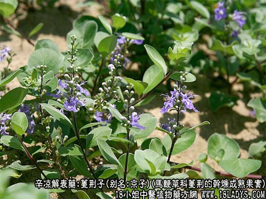
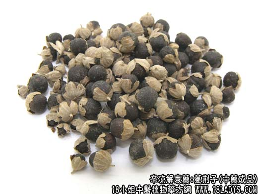

原文出处:本文转载自中药大全网。
原文连接:https://www.daquan.com/post/2167.html
原文连接:https://www.daquan.com/post/2167.html



蔓荆子为常用中药，《神农本草经》列为上品。
别名：京子。
来源：为马鞭草科植物落叶灌木单叶蔓荆或蔓荆的干燥成熟果实。野生。主的山东、江西等地。
性状鉴别：圆球形，直径4~6毫米，黑褐色，密布淡黄小点。多数底部有宿萼包被大半个果实，边缘有五个小裂片，常裂成两瓣，灰白色，密生细绒毛。体质坚硬不易碎。横断面灰白色，有棕色油点，内分四室，每室有种子一枚。种仁白色，有油性。气芳香，味淡。
以粒大，均匀饱满，无杂质者为佳。
主要成分：含挥发油（为樟烯等）、黄荆素维生素A等。
功效与作用：疏散风热，有镇静、止痛作用。
炮制：炒黑。
性味：辛苦，寒。
归经：入肝，胃，膀胱经。
功能：散风清热。
主治：感冒风热，头痛目赤，牙龈肿痛。
临床应用：1、主要用于治疗头痛，尤其适用于因外感风热（感冒）而引起的头痛、眼痛。对高血压引起的头痛也有效。
2、用于治疗湿痹拘挛（由于感受风湿引起肢体酸麻，活动不便），尤其适用于老年体虚引起的手脚抽搐。
用量：3～9g
处方举例：蔓荆子汤：蔓荆子9g，菊花9g，薄荷6g（后下），白芷6g，钩藤12g，水煎服，治偏热型的高血压头痛。
注：无宿萼的，大部分是果实成熟后自落于水中，经水浸泡后捞出晒干者。